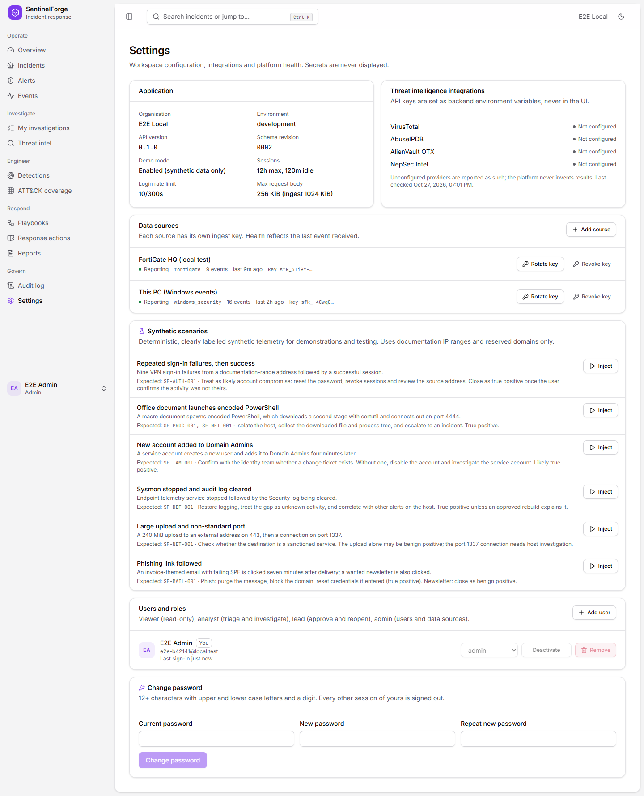

Step-by-step instructions for sending logs from firewalls, Windows servers, Microsoft 365 / Entra ID, Microsoft Defender and custom systems into SentinelForge IR, and for enabling threat-intelligence lookups.
SentinelForge receives logs over HTTPS. Every log source posts batches of events to the ingestion API with its own secret key. The platform normalises the events, stores them, and immediately runs the detection rules over them.
Authorization: Bearer sfk_…| Term | Meaning |
|---|---|
| Data source | A named log stream, for example “FortiGate HQ” or “DC01 Security log”. Each has a health status (Reporting / Stale), an event count and its own ingest key. |
| Ingest key | A secret starting with sfk_. It is shown once when created; only its hash is stored. It can only send events: it cannot read data or sign in. |
| Shipper / relay | A small program that collects logs where they are produced and posts them to the API. SentinelForge provides ready-made ones for FortiGate, Windows and Microsoft Graph (folder connectors/ in the repository). |
| Endpoint | The API address a shipper posts to. Each format has its own endpoint (table below). |
| Endpoint (on https://sentinelforge-api.kuinkel.com) | Accepts | Used by |
|---|---|---|
POST /api/v1/ingest/fortigate | FortiOS syslog lines (key=value or JSON) | FortiGate relay |
POST /api/v1/ingest/microsoft/windows-event | Windows Security, System, Sysmon events | Windows shipper, Log Analytics |
POST /api/v1/ingest/microsoft/entra-signin | Entra ID sign-in logs | Graph shipper, Logic App |
POST /api/v1/ingest/microsoft/entra-audit | Entra ID audit logs | Graph shipper, Logic App |
POST /api/v1/ingest/microsoft/defender-alert | Defender XDR / Entra ID Protection alerts | Graph shipper, Logic App |
POST /api/v1/ingest/events | Normalised JSON events (any system) | Your own scripts and tools |
| Rule | Detects | Needs logs from |
|---|---|---|
| SF-AUTH-001 | Five or more failed logins for one account from one address, then a success within 10 minutes | FortiGate SSL-VPN, Windows 4624/4625, Entra ID sign-ins |
| SF-PROC-001 | Suspicious command lines: encoded PowerShell, LOLBins (certutil, mshta, rundll32…), Office spawning shells | Windows 4688 with command line, Sysmon 1 |
| SF-IAM-001 | New account added to a privileged group or role within 30 minutes | Windows 4720 + 4728/4732/4756, Entra ID audit |
| SF-DEF-001 | Audit log cleared or logging service stopped | Windows 1102/104, 7036 |
| SF-NET-001 | Outbound connections on remote-access ports, large uploads, watchlisted destinations | FortiGate traffic, Sysmon 3 |
| SF-MAIL-001 | An emailed link visited by the recipient within an hour | Email gateway + DNS / web filter (FortiGate) |
| SF-EXT-001 | Medium/high alerts from security products | FortiGate IPS/AV, Microsoft Defender |
https://sentinelforge-api.kuinkel.com on TCP 443 (outbound HTTPS).connectors/:
connectors/fortigate/fortigate_relay.pyconnectors/windows/Send-WindowsEvents.ps1connectors/microsoft-graph/ship_graph_logs.pyFrom the machine that will run a shipper, the health check must return "status":"ok":
# Windows PowerShell Invoke-RestMethod https://sentinelforge-api.kuinkel.com/api/v1/health # Linux / macOS curl -s https://sentinelforge-api.kuinkel.com/api/v1/health
If your network uses an outbound proxy, set HTTPS_PROXY for the Python connectors (they honour it) or use -Proxy with PowerShell.
The hosted database has 0.5 GB. Security events (logins, alerts, admin changes) are small and always worth sending. High-volume traffic logs are filtered by default in the FortiGate relay; keep the default unless you have a larger database.
Sign in at https://sentinelforge.kuinkel.com with an administrator account.
Open Settings (left sidebar, under Govern) and find the Data sources panel. Click Add source.
Enter a clear Name (for example FortiGate HQ, DC01 Security log, Entra ID) and choose the Type:
| Connecting | Type |
|---|---|
| FortiGate firewall | fortigate |
| Windows Security / System log | windows_security |
| Sysmon (separate source, optional) | sysmon |
| Entra ID sign-in and audit logs | microsoft_entra |
| Microsoft Defender alerts | microsoft_defender |
| Anything else | closest match, or custom |
Click Create and show key. Copy the key (it starts with sfk_) into your password manager or straight into the shipper's configuration, then click I have stored it. It cannot be shown again.

Figure 1 – Settings → Data sources. Each row shows health, type, event count, last event and the first characters of the key.
| Button | What it does | When to use it |
|---|---|---|
| Rotate key | Issues a new key and invalidates the old one immediately. The new key is shown once. | Scheduled rotation, staff changes, suspected exposure. Update the shipper with the new key right away. |
| Revoke key | Invalidates the key; the source and its events are kept. Shippers using it get 401. | Decommissioning a log sender, or stopping a misbehaving one. |
| Issue key | Creates a key for a source whose key was revoked. | Re-enabling a source. |
| Delete | Removes the source. Only offered when it has no stored events, so evidence is never lost. | Cleaning up a source created by mistake. |
FortiGate sends logs only as syslog. A small relay program inside your network receives the syslog and forwards it to SentinelForge over HTTPS.
fortigate_relay.py/api/v1/ingest/fortigate| FortiGate log | Becomes | Detection |
|---|---|---|
| SSL-VPN login failures and tunnels established | Login failure / success | VPN password guessing (SF-AUTH-001) |
| Administrator logins to the firewall | Login failure / success | SF-AUTH-001 |
| Accepted traffic sessions (filtered) | Network connection | SF-NET-001 |
| DNS filter, web filter | DNS query, web request | SF-MAIL-001 |
| IPS, antivirus, anomaly, blocked application control | Security alert | SF-EXT-001 |
Follow chapter 3 with type fortigate (for example “FortiGate HQ”). Keep the sfk_ key ready.
Any always-on machine on the LAN that the FortiGate can reach: a small Linux VM, a Windows server, or a Raspberry Pi. Requirements: Python 3.10+, outbound HTTPS, and inbound UDP and TCP 5514 from the FortiGate.
Install Python 3 from python.org (tick Add python.exe to PATH). Copy fortigate_relay.py to C:\SentinelForge\.
Allow the syslog port through Windows Firewall (PowerShell as Administrator; use your FortiGate's IP):
New-NetFirewallRule -DisplayName "SentinelForge relay UDP" -Direction Inbound -Protocol UDP -LocalPort 5514 -RemoteAddress 192.168.1.99 -Action Allow New-NetFirewallRule -DisplayName "SentinelForge relay TCP" -Direction Inbound -Protocol TCP -LocalPort 5514 -RemoteAddress 192.168.1.99 -Action Allow
Store the settings as machine environment variables (not in the script):
[Environment]::SetEnvironmentVariable("SENTINELFORGE_URL", "https://sentinelforge-api.kuinkel.com", "Machine")
[Environment]::SetEnvironmentVariable("SENTINELFORGE_INGEST_KEY", "sfk_paste_your_key_here", "Machine")Test it in a new PowerShell window; it should print Listening for FortiGate syslog…:
python C:\SentinelForge\fortigate_relay.py --allow 192.168.1.99
Run it permanently as a startup task (Administrator PowerShell):
$action = New-ScheduledTaskAction -Execute "python.exe" -Argument "C:\SentinelForge\fortigate_relay.py --allow 192.168.1.99" $trigger = New-ScheduledTaskTrigger -AtStartup $settings = New-ScheduledTaskSettingsSet -RestartCount 999 -RestartInterval (New-TimeSpan -Minutes 1) -ExecutionTimeLimit ([TimeSpan]::Zero) Register-ScheduledTask -TaskName "SentinelForge FortiGate relay" -Action $action -Trigger $trigger -Settings $settings -User "SYSTEM" -RunLevel Highest Start-ScheduledTask -TaskName "SentinelForge FortiGate relay"
sudo mkdir -p /opt/sentinelforge /etc/sentinelforge sudo cp fortigate_relay.py /opt/sentinelforge/ sudo tee /etc/sentinelforge/relay.env >/dev/null <<'EOF' SENTINELFORGE_URL=https://sentinelforge-api.kuinkel.com SENTINELFORGE_INGEST_KEY=sfk_paste_your_key_here EOF sudo chmod 600 /etc/sentinelforge/relay.env sudo tee /etc/systemd/system/sentinelforge-relay.service >/dev/null <<'EOF' [Unit] Description=SentinelForge FortiGate syslog relay After=network-online.target Wants=network-online.target [Service] EnvironmentFile=/etc/sentinelforge/relay.env ExecStart=/usr/bin/python3 /opt/sentinelforge/fortigate_relay.py --allow 192.168.1.99 DynamicUser=yes Restart=always RestartSec=5 [Install] WantedBy=multi-user.target EOF sudo systemctl daemon-reload sudo systemctl enable --now sentinelforge-relay sudo journalctl -u sentinelforge-relay -f # watch the log sudo ufw allow from 192.168.1.99 to any port 5514 # if ufw is enabled
| Option | Meaning |
|---|---|
--allow required | Comma-separated IPs of your FortiGate(s). Packets from any other address are dropped, so nobody can inject fake firewall logs. |
--port 5514 | UDP and TCP port to listen on. 5514 avoids needing administrator rights for port 514. |
--traffic interesting | interesting: only accepted sessions to public addresses on unusual ports or with more than 10 MiB sent. all: every session (very high volume). none: no traffic logs. VPN, admin, DNS, web filter and IPS logs are always sent. |
--bind 0.0.0.0 | Local address to listen on; set the LAN IP to listen on one interface only. |
--batch--interval | Up to 200 lines per request, sent every 5 seconds. |
--buffer 50000 | Lines kept in memory while SentinelForge is unreachable; the relay retries automatically. |
Open the CLI console (top right in the GUI, or SSH) and run, replacing 192.168.1.50 with the relay machine's IP:
config log syslogd setting
set status enable
set server "192.168.1.50"
set port 5514
set mode udp # or "reliable" for TCP
set format default # "json" is also supported
set facility local7
end
config log syslogd filter
set severity information
set forward-traffic enable
set local-traffic disable
set multicast-traffic disable
set sniffer-traffic disable
set anomaly enable
set voip disable
end
If the FortiGate sends logs from a management interface or VDOM, pin the source address and put that same IP in the relay's --allow:
config log syslogd setting
set source-ip 192.168.1.99
end
diagnose sniffer packet any 'port 5514' 4 5.stats received=812, dropped_filter=640, sent=172, ….The PowerShell shipper runs every 5 minutes on each server (domain controllers first), reads the security-relevant event IDs since its last run, and posts them to SentinelForge.
| Log | Event IDs | Meaning |
|---|---|---|
| Security | 4624, 4625 | Successful / failed logon (machine accounts and system logons are skipped) |
| Security | 4688 | Process created (with command line when enabled) |
| Security | 4720 | User account created |
| Security | 4728, 4732, 4756 | Member added to a global / local / universal security group |
| Security | 1102 | Security log cleared |
| System | 7036, 104 | Service stopped (e.g. Windows Event Log, Sysmon); log cleared |
| Sysmon | 1, 3, 22 | Process creation with hashes, network connection, DNS query (only if Sysmon is installed) |
On a domain, set these in a GPO linked to servers and domain controllers: Computer Configuration → Policies → Windows Settings → Security Settings → Advanced Audit Policy Configuration. For a single machine, run in an Administrator command prompt:
auditpol /set /subcategory:"Logon" /success:enable /failure:enable auditpol /set /subcategory:"Process Creation" /success:enable auditpol /set /subcategory:"User Account Management" /success:enable /failure:enable auditpol /set /subcategory:"Security Group Management" /success:enable auditpol /set /subcategory:"Audit Policy Change" /success:enable
Include command lines in event 4688 (needed for suspicious-process detection). GPO: Administrative Templates → System → Audit Process Creation → Include command line in process creation events = Enabled, or on one machine:
reg add "HKLM\Software\Microsoft\Windows\CurrentVersion\Policies\System\Audit" /v ProcessCreationIncludeCmdLine_Enabled /t REG_DWORD /d 1 /f
Create a data source (chapter 3), type windows_security, one per server or one shared by a group of servers.
Copy Send-WindowsEvents.ps1 to C:\SentinelForge\ on the server.
Store the key at machine level (Administrator PowerShell):
[Environment]::SetEnvironmentVariable("SENTINELFORGE_INGEST_KEY", "sfk_paste_your_key_here", "Machine")Run it once by hand to test (Administrator PowerShell, because the Security log requires it):
powershell -NoProfile -ExecutionPolicy Bypass -File C:\SentinelForge\Send-WindowsEvents.ps1 -ApiUrl https://sentinelforge-api.kuinkel.com
Expected output: … sent 214 events, 214 new, 0 alerts raised. The first run reads the last 60 minutes (-LookbackMinutes changes this).
Schedule it every 5 minutes as SYSTEM:
$action = New-ScheduledTaskAction -Execute "powershell.exe" -Argument '-NoProfile -ExecutionPolicy Bypass -File "C:\SentinelForge\Send-WindowsEvents.ps1" -ApiUrl https://sentinelforge-api.kuinkel.com' $trigger = New-ScheduledTaskTrigger -Once -At (Get-Date) -RepetitionInterval (New-TimeSpan -Minutes 5) Register-ScheduledTask -TaskName "SentinelForge event shipper" -Action $action -Trigger $trigger -User "SYSTEM" -RunLevel Highest
| Parameter | Meaning |
|---|---|
-ApiUrl required | https://sentinelforge-api.kuinkel.com |
-StateFile | Where the last-sent time is kept (default C:\ProgramData\SentinelForge\windows-events.state). Delete it to resend the lookback window; duplicates are ignored. |
-LookbackMinutes 60 | How far back the first run reads. |
-IncludeNetworkLogons | Also send successful network logons (type 3). Very frequent on servers; failures are always sent. |
-BatchSize 200 | Events per request. |
The Graph shipper reads Entra ID sign-in and audit logs and Defender XDR alerts from Microsoft Graph using an app registration, and posts them to SentinelForge. Run it on any always-on machine with outbound HTTPS.
| Stream | Graph source | Permission | Licence |
|---|---|---|---|
entra-signin | /auditLogs/signIns | AuditLog.Read.All, Directory.Read.All | Entra ID P1 or P2 |
entra-audit | /auditLogs/directoryAudits | AuditLog.Read.All | Any |
defender-alert | /security/alerts_v2 | SecurityAlert.Read.All | Defender for Endpoint / Office 365 / Identity, or Microsoft 365 E5 / Business Premium |
Open entra.microsoft.com as a Global Administrator or Privileged Role Administrator → Applications → App registrations → New registration. Name: SentinelForge log shipper; Accounts in this organizational directory only; no redirect URI. Click Register.
On the Overview page copy the Directory (tenant) ID and Application (client) ID.
API permissions → Add a permission → Microsoft Graph → Application permissions. Add AuditLog.Read.All, Directory.Read.All and SecurityAlert.Read.All. Then click Grant admin consent for <your tenant>; every permission must show a green tick.
Certificates & secrets → Client secrets → New client secret, expiry 6–12 months. Copy the secret Value immediately (it is hidden afterwards). Put a reminder in your calendar to renew it before it expires.
Create one source of type microsoft_entra (sign-ins and audit) — and optionally a separate microsoft_defender source if you want separate health tracking. One key can serve all three streams.
Copy ship_graph_logs.py to the machine (e.g. C:\SentinelForge\ or /opt/sentinelforge/).
Set the configuration as environment variables for the account that will run it:
# Windows (PowerShell); use "Machine" if it will run as SYSTEM [Environment]::SetEnvironmentVariable("MS_TENANT_ID", "<tenant id>", "User") [Environment]::SetEnvironmentVariable("MS_CLIENT_ID", "<client id>", "User") [Environment]::SetEnvironmentVariable("MS_CLIENT_SECRET", "<secret value>", "User") [Environment]::SetEnvironmentVariable("SENTINELFORGE_URL", "https://sentinelforge-api.kuinkel.com", "User") [Environment]::SetEnvironmentVariable("SENTINELFORGE_INGEST_KEY", "sfk_paste_your_key_here", "User") # Linux: put the same five lines (NAME=value) in /etc/sentinelforge/graph.env, chmod 600
Run once to test:
python ship_graph_logs.py
# without an Entra ID P1/P2 licence:
python ship_graph_logs.py --streams entra-audit,defender-alert
Expected output, one line per stream: entra-signin: 120 fetched, 120 new, 0 duplicate, 3 skipped, 0 alerts.
Run it continuously or on a schedule:
# keep running, one pass every 5 minutes python ship_graph_logs.py --loop 300 # or Windows Task Scheduler every 5 minutes $action = New-ScheduledTaskAction -Execute "python.exe" -Argument "C:\SentinelForge\ship_graph_logs.py" $trigger = New-ScheduledTaskTrigger -Once -At (Get-Date) -RepetitionInterval (New-TimeSpan -Minutes 5) Register-ScheduledTask -TaskName "SentinelForge Graph shipper" -Action $action -Trigger $trigger # or Linux cron (as the user that owns graph.env) */5 * * * * set -a; . /etc/sentinelforge/graph.env; /usr/bin/python3 /opt/sentinelforge/ship_graph_logs.py
| Option | Meaning |
|---|---|
--streams | Comma-separated: entra-signin, entra-audit, defender-alert (default all). |
--lookback 60 | Minutes fetched on the first run. |
--state | Checkpoint file (default next to the script). Each stream continues from its last record. |
--loop | Seconds between passes; 0 runs once. |
The shipper waits and retries automatically when Microsoft Graph throttles (HTTP 429). Microsoft makes new sign-in records available after a few minutes; that delay is normal.
If your logs already flow into a Log Analytics workspace (Microsoft Sentinel, Defender for Cloud, Azure Monitor Agent), you can forward them without running anything on your servers, using a Logic App.
sentinelforge-ingest-key, value = the key.Create a Logic App (Consumption). Under Identity enable the system-assigned managed identity, and give it Log Analytics Reader on the workspace and Key Vault Secrets User on the vault.
Trigger: Recurrence, every 5 minutes.
Action: Azure Monitor Logs → Run query and list results on your workspace with one of these queries (time range: last 5 minutes):
// Windows security events → endpoint .../ingest/microsoft/windows-event SecurityEvent | where EventID in (4624, 4625, 4688, 4720, 4728, 4732, 4756, 1102) | project TimeGenerated, Computer, EventID, EventData // Entra ID sign-ins → .../ingest/microsoft/entra-signin SigninLogs | project TimeGenerated, UserPrincipalName, IPAddress, ResultType, ResultDescription, AppDisplayName, LocationDetails, DeviceDetail // Entra ID audit → .../ingest/microsoft/entra-audit AuditLogs | where OperationName in ("Add user", "Add member to role", "Add member to group", "Add eligible member to role") | project TimeGenerated, OperationName, Result, InitiatedBy, TargetResources // Security alerts → .../ingest/microsoft/defender-alert SecurityAlert | project TimeGenerated, AlertName, AlertSeverity, ProviderName, CompromisedEntity, Description
Action: Azure Key Vault → Get secret sentinelforge-ingest-key. In its Settings, turn on Secure outputs so the key never appears in run history.
Action: HTTP
https://sentinelforge-api.kuinkel.com/api/v1/ingest/microsoft/windows-event (or the endpoint matching the query)Authorization: Bearer @{body('Get_secret')?['value']}Content-Type: application/json@{body('Run_query_and_list_results')?['value']}Turn on Secure inputs for this action as well. If more than 500 rows can arrive in 5 minutes, run the trigger more often or add a Chunk step (batches of 500).
Save, click Run, and check the HTTP action's output: {"received": …, "inserted": …, "skipped": …}.
Anything that can make an HTTPS request — a Linux server script, a SaaS webhook, a SIEM export, an EDR — can send events directly in SentinelForge's normalised format.
POST https://sentinelforge-api.kuinkel.com/api/v1/ingest/events
Authorization: Bearer sfk_...
Content-Type: application/json
{
"events": [
{
"event_time": "2026-10-27T09:15:00Z",
"event_type": "auth.failure",
"host": "web-01",
"user_name": "j.doe",
"src_ip": "203.0.113.45",
"outcome": "failure",
"message": "sshd: Failed password for j.doe",
"raw": {"program": "sshd", "pid": 4123}
}
],
"run_detection": true
}
Response: {"received": 1, "inserted": 1, "duplicates": 0, "alerts_created": 0, "alerts_updated": 0, "skipped": 0}
| event_type | Use for | Important fields |
|---|---|---|
auth.success / auth.failure | Logins (VPN, SSH, web apps, AD) | user_name, src_ip, host |
process.start | Process creation | host, process_name, command_line, parent_process, file_hash |
iam.user_created | Account creation | target_user, user_name (who did it) |
iam.group_member_added | Group / role membership added | target_user, group_name |
log.cleared | Audit log cleared | host, user_name |
service.stopped | Service stopped | host, process_name (service name) |
network.connection | Firewall / flow records | src_ip, dst_ip, dst_port, bytes_out, host |
dns.query | DNS lookups | domain, host or src_ip |
proxy.request | Web / proxy requests | url, domain, user_name, host |
email.delivered | Mail gateway deliveries | email_sender, email_subject, user_name (recipient), url, domain |
file.created | File creation | host, file_hash, process_name |
security.alert | Alerts from other security tools | outcome = severity (low/medium/high), message = title, host, user_name |
curl -sS -X POST https://sentinelforge-api.kuinkel.com/api/v1/ingest/events \
-H "Authorization: Bearer $SENTINELFORGE_INGEST_KEY" -H "Content-Type: application/json" \
-d '{"events":[{"event_time":"2026-10-27T09:15:00Z","event_type":"auth.failure","host":"web-01","user_name":"j.doe","src_ip":"203.0.113.45"}]}'
$body = @{ events = @(@{ event_time = (Get-Date).ToUniversalTime().ToString("o"); event_type = "auth.failure"
host = "web-01"; user_name = "j.doe"; src_ip = "203.0.113.45" }) } | ConvertTo-Json -Depth 5
Invoke-RestMethod -Method Post -Uri https://sentinelforge-api.kuinkel.com/api/v1/ingest/events `
-Headers @{ Authorization = "Bearer $env:SENTINELFORGE_INGEST_KEY" } -ContentType "application/json" -Body $body
import os, json, urllib.request, datetime
event = {"event_time": datetime.datetime.now(datetime.UTC).isoformat(), "event_type": "auth.failure",
"host": "web-01", "user_name": "j.doe", "src_ip": "203.0.113.45"}
req = urllib.request.Request("https://sentinelforge-api.kuinkel.com/api/v1/ingest/events",
data=json.dumps({"events": [event]}).encode(), method="POST",
headers={"Authorization": f"Bearer {os.environ['SENTINELFORGE_INGEST_KEY']}", "Content-Type": "application/json"})
print(urllib.request.urlopen(req, timeout=30).read().decode())
event_time must include a time zone (e.g. Z) and may not be more than 5 minutes in the future.raw (any JSON object).When an analyst investigates an IP, domain, URL or file hash, SentinelForge asks each configured provider. Provider API keys are set on the server (Vercel), never in the web interface.
| Provider | Environment variable | Where to get the key |
|---|---|---|
| NepSec Intel | NEPSECINTEL_API_KEY | nepsecintel.kuinkel.com → Workspace → API keys (admin or Pro account). Key starts with tl_. |
| VirusTotal | VIRUSTOTAL_API_KEY | virustotal.com → your profile → API key |
| AbuseIPDB | ABUSEIPDB_API_KEY | abuseipdb.com → Account → API |
| AlienVault OTX | OTX_API_KEY | otx.alienvault.com → Settings → OTX Key |
Sign in at https://nepsecintel.kuinkel.com with an administrator or Pro account.
Open Workspace → API keys, create a key named SentinelForge, and copy it (shown once).
In vercel.com open project sentinelforge-api → Settings → Environment Variables → Add New: Key NEPSECINTEL_API_KEY, Value = the key, environments Production and Preview, tick Sensitive, Save.
Deployments → the latest production deployment → ⋯ → Redeploy. New variables apply only after a redeploy.
In SentinelForge, Settings → Threat intelligence integrations now shows NepSec Intel: Configured. On Threat intel, investigate an indicator: the NepSec Intel card shows its risk score, top findings and an Open full report link.
These create harmless, clearly identifiable activity. Tell your team before running them, then close the resulting alerts as Benign positive with a note.
| Source | Test | Expected alert |
|---|---|---|
| FortiGate SSL-VPN | From one outside IP, sign in to the SSL-VPN portal with a test account and a wrong password five times, then the correct password, within 10 minutes. | SF-AUTH-001 “Sign-in succeeded for <user> after 5 failures” |
| FortiGate IPS | From a lab machine, browse to the EICAR test file (eicar.org) through a policy with antivirus enabled. | SF-EXT-001 “FortiGate antivirus: malware EICAR…” |
| Windows | On a test server, five wrong passwords then a correct one for a test account (RDP or runas). | SF-AUTH-001 |
| Windows | Create a test user and add it to a privileged test group within 30 minutes, then remove it.net user sf-test P@ss-Test-2026! /addnet localgroup Administrators sf-test /add | SF-IAM-001 |
| Entra ID | Create a test user in Entra ID and assign it a privileged role (e.g. User Administrator), then remove it. | SF-IAM-001 |
| Defender | Run Microsoft's documented Defender for Endpoint detection test on an onboarded device. | SF-EXT-001 |
| Code | Meaning | Fix |
|---|---|---|
| 200 | Accepted | Check inserted, duplicates and skipped. Many skipped means the records were not of a supported kind (see the connector's table). |
| 401 | Missing, wrong or revoked key | Check the environment variable (no spaces or quotes). Rotate the key and update the shipper. |
| 413 | Too many records or body over 1 MiB | Reduce the batch size (max 500). |
| 422 | Invalid events (generic API) | The response names the field: timestamp without time zone, unknown field, bad IP, unsupported event_type. |
| 429 | Rate limit (60 requests/minute per source) | Send larger, less frequent batches. Shippers retry automatically. |
| 5xx | Server or database temporarily unavailable | Shippers retry. Check https://sentinelforge-api.kuinkel.com/api/v1/health. |
| Symptom | Check |
|---|---|
FortiGate relay: received=0 | FortiGate cannot reach the relay: diagnose sniffer packet any 'port 5514' 4; Windows/ufw firewall on the relay; correct server IP in log syslogd setting. |
FortiGate relay: rejected_source > 0 | The firewall sends from another IP: add it to --allow or set source-ip. |
| FortiGate: events but no traffic | Policies do not log allowed traffic, or the default --traffic interesting filtered normal HTTPS (expected). |
| Windows shipper: “sent 0 events” | Not run as Administrator / SYSTEM; auditing not enabled (auditpol /get /category:*); no matching events since the last run. |
| Windows: process alerts never fire | Command-line logging for 4688 is off (chapter 5.1). |
Graph shipper: HTTP 403 … Authorization_RequestDenied | Admin consent not granted, or a permission is missing (chapter 6.1 step 3). |
| Graph shipper: sign-ins fail with a licence error | The tenant has no Entra ID P1/P2: use --streams entra-audit,defender-alert. |
Graph shipper: invalid_client | The client secret expired or was copied as the secret ID instead of the Value. |
| Source shows Stale | No event for 24 hours: the shipper stopped (check its scheduled task / service) or the source is quiet. |
--allow and a host firewall rule.| Limit | Value |
|---|---|
| Events / records per request | 500 |
| Request body | 1 MiB |
| Requests per source | 60 per minute |
| Future timestamps | max 5 minutes |
| Health “Reporting” | event within 24 h |
| Threat-intel cache | 24 h per provider |
| Database (free tier) | 0.5 GB |
| Field | Type | Notes |
|---|---|---|
event_time required | ISO 8601 with zone | When it happened, e.g. 2026-10-27T09:15:00Z |
event_type required | string | One of the types in chapter 8 |
outcome | string ≤ 32 | success / failure / allowed / blocked; severity for security.alert |
host | string ≤ 255 | Hostname of the machine involved (creates or updates an asset) |
user_name | string ≤ 255 | Account acting or signing in |
src_ip, dst_ip | IPv4 / IPv6 | Validated |
dst_port | 0–65535 | |
domain, url | string | URL up to 2048 characters |
process_name, parent_process | string | Executable names, e.g. powershell.exe |
command_line | string ≤ 8192 | Stored and shown as inert text |
file_hash | string ≤ 128 | MD5, SHA-1 or SHA-256 |
target_user, group_name | string | For IAM events |
email_sender, email_subject | string | For email.delivered |
bytes_out | integer ≥ 0 | Bytes sent, for transfers |
message | string ≤ 4000 | Human-readable summary |
raw | JSON object | Original vendor fields, kept for investigation |
More detail in the repository: docs/connectors-fortigate.md, docs/connectors-microsoft.md, docs/api.md and docs/detection-coverage.md.